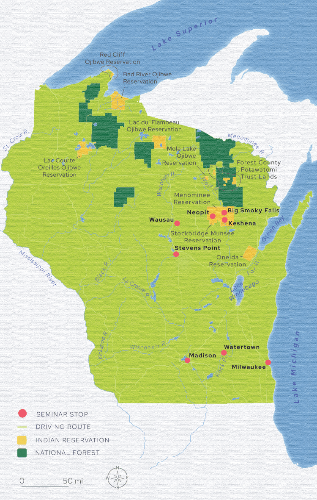
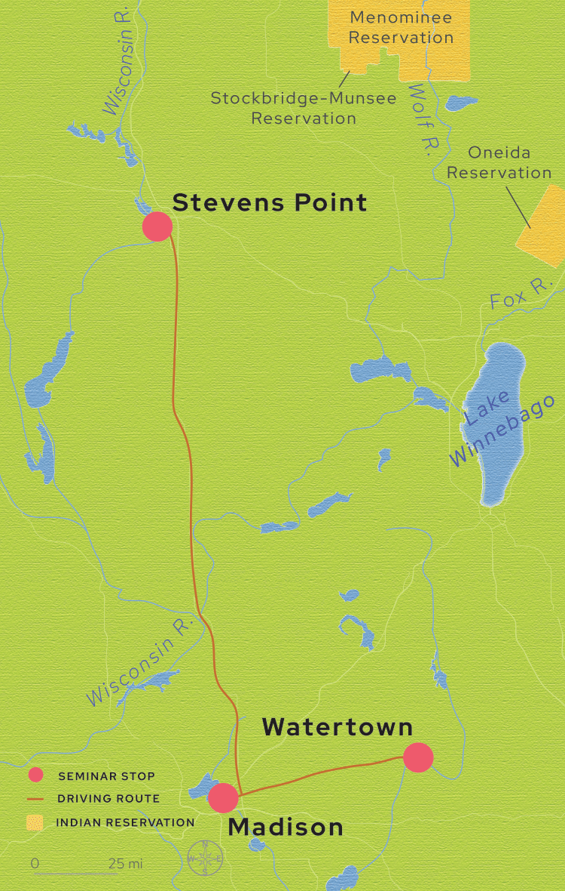
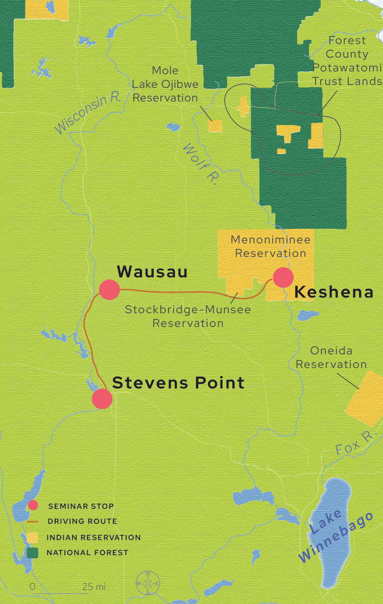
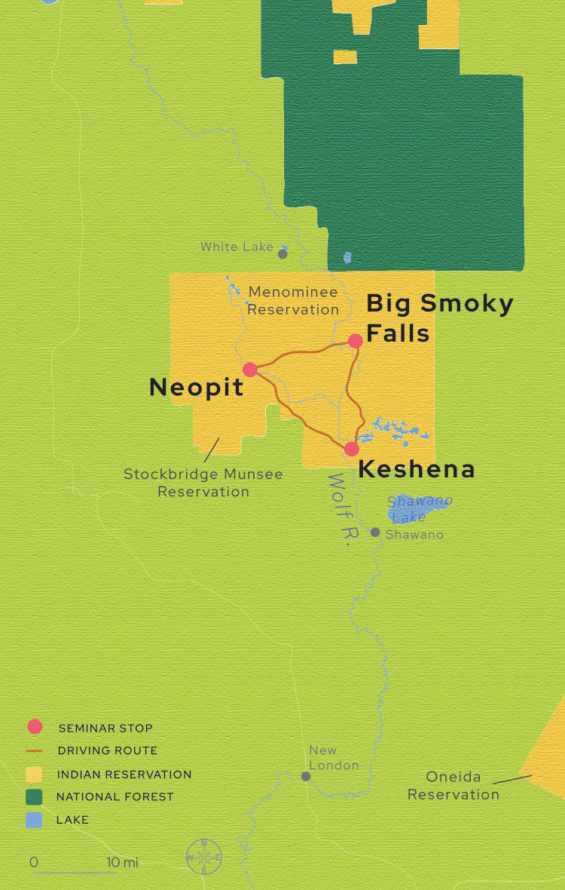
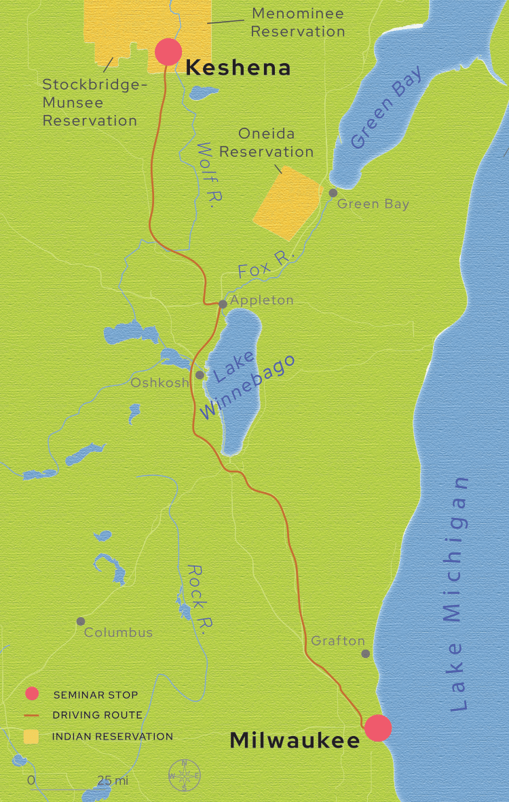
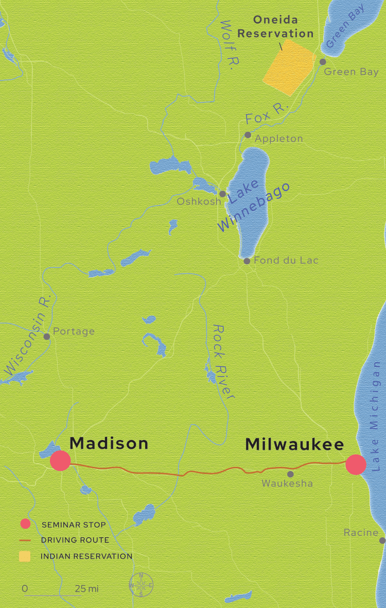
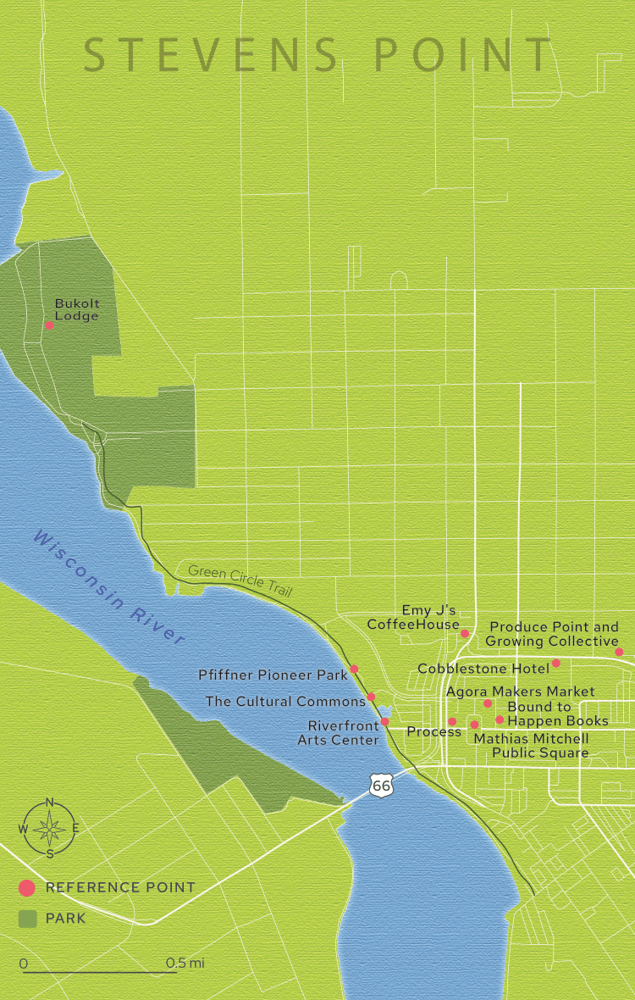

Booklet Maps for Wisconsin Idea Seminar
I created 7 maps for in a booklet for Wisconsin Idea Seminar, a five-day study experience in which UW-Madison faculty and staff are given the opportunity to learn firsthand about the social and cultural contexts that shape the lives of many students at UW-Madison. The maps' designs are inspired by Hmong Embroidery, specifically from what was created by the 2025 booklet cover designer Edward Xiong.






